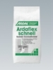
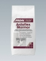
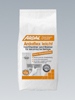
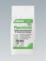
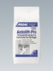
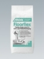
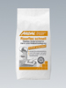
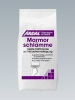
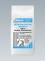

Клеящие растворы
Таблица применения:

НАКЛЕИВАНИЕ КЕРАМИЧЕСКИХ ПОКРЫТИЙ
Европейский стандарт DIN EN 12004 устанавливает требования по качеству тонкослойных клеевых растворов:
Химическая основа материала:
С = цемент, D = дисперсия, R = двухкомпонентная смола (эпоксидная)
Прочность сцепления с основанием:
1 – превышает 0,5 Н/мм2 (0,5 мПа)
2 – превышает 1,0 Н/мм2 (1,0 мПа)
F – Быстросхватывающийся – через 24 часа прочность сцепления с основанием составляет 0,5 Н/мм2 (0,5 мПа)
T – Тиксотропный – повышенная устойчивость к оползанию на вертикальных поверхностях равна 0,5 мм
E – Увеличенное время до начала схватывания нанесенного раствора ("открытое время") больше 30 минут
Европейский стандарт DIN EN 12002 устанавливает требования к деформируемости растворов:
S1 – деформируемость превышает 2,5 мм
S2 – деформируемость превышает 5 мм

Основные характеристики клеящих растворов. Классификация по DIN EN 12004
 Ардафлекс Топ
Ардафлекс Топ
Ardaflex Top
Высокоэластичный, тонкослойный раствор с хорошими рабочими характеристиками, высокой стойкостью и универсальным спектром применения.
Отвечает требованиям стандарта EN 12004-С2 ТЕ и Руководящих указаний по эластичным растворам (DIN EN 12002 - S1). Предназначен для внутреннего, наружного и подводного применения.
Низкий уровень солей хромовой кислоты отвечает стандарту TRGS 613.
Клеящий раствор Ардафлекс Топ в первую очередь предназначен для приклеивания керамической напольной и настенной плитки, каменной керамики (Feinsteinzeug) , стеклянной и фарфоровой мозаики, плит из природного и искусственного камня, а также жесткого пенопласта (напр., пенополистирола - Styropor).
Применение клеящего раствора Ардафлекс Топ рекомендуется в следующих случаях:
- при наклеивании вышеуказанных материалов на проблемные, с точки зрения обеспечения адгезии, поверхности, например - облицовочный бетон, асфальтные (литые) бесшовные полы, сульфтно-кальцевые полы(calciumsulfatgebundene Estriche) старое керамическое покрытие, гипсовая штукатурки и гипсовые плиты(Gipsbauplatten);
- при наклеивании вышеуказанных материалов на поверхности с вероятным изменением размеров в результате температурных колебаний, например - полы с подогревом, балконы, террасы и фасады.
Giscode ZP1
Расход: 1,5 - 3,0 кг/м.кв., зависит от типа зубчатой рейки.
Хранение: в сухом и прохладном месте
Упаковка: 4 пакета по 5 кг в упаковке, мешок 25кг
|
Жизнеспособность |
Открытое время | Доступность для прохода | Затирка швов | Термостойкость | Расход |
| 3 - 4 часа | > 30 минут | ~ 12 часов | ~ 12 часов | + 80° С | 1,5 - 3,0 кг/м2 |

Ардафлекс ШнельArdaflex schnell
Быстрозатвердевающий тонкослойный клеевой раствор. Испытан на соответствие требованиям стандарта EN12004 - С2 FТ и Руководящих указаний по эластичным растворам (DIN EN 12002 - S1). Для внутреннего, наружного и подводного применения. Низкое содержание солей хромовой кислоты отвечает стандарту TRGS 613. Предназначен для наклеивания керамической напольной и настенной плитки, каменной керамики (Feinsteinzeug) , стеклянной и фарфоровой мозаики, плит из природного и искусственного камня, жесткого пенопласта (напр., пенополистирола- Styropor), а также изоляционных плит (Fliesend ä mmplatten). Giscode ZP1
Расход: 1,5 - 3,0 кг/м.кв., зависит от типа зубчатой рейки.
Хранение: в сухом и прохладном месте.
Упаковка: мешок 25 кг
|
Жизнеспособность |
Открытое время | Доступность для прохода | Затирка швов | Термостойкость | Расход |
| 30 - 40 минут | ~ 15 минут | ~ 3 часа | ~ 3 часа | + 80° С | 1,5 - 3,0 кг/м2 |

Ардафлекс МраморArdaflex Marmor
Быстрозатвердевающий белый эластичный тонкослойный клеевой раствор с очень хорошими характеристиками по нанесению. Для внутреннего и наружного применения. Испытан на соответствие требованиям стандарта EN12004 - С2 FТ и Руководящих указаний по эластичным растворам (DIN EN 12002 - S1). Низкое содержание солей хромовой кислоты по стандарту TRGS 613. Предназначен для укладки прозрачного и полупрозрачного, подверженного изменению окраски, калиброванного природного камня, керамической плитки и каменной керамики (Feinsteinzeug) на поверхности стен и полов. Может применяться также на полах с подогревом. Giscode ZP 1.
Расход: 1,5 - 3,0 кг/м.кв., зависит от типа зубчатой рейки.
Хранение: в сухом и прохладном месте.
Упаковка: мешок 25 кг
|
Жизнеспособность |
Открытое время | Доступность для прохода | Затирка швов | Термостойкость | Расход |
| 30 - 40 минут | ~ 15 минут | ~ 3 часа | ~ 3 часа | + 80° С | 1,5 - 3,0 кг/м2 |

Ардафлекс ЛяйхтArdaflex leicht
Высокоэластичный тонкослойный клеевой раствор с высокой начальной адгезией и универсальный в применении. Благодаря использованию облегченных наполнителей достигается меньший расход материала на единицу площади при исключительной простоте нанесения. Для внутреннего и наружного применения. Испытан на соответствие требованиям стандарта EN12004 - С2 ТЕ и Руководящих указаний по эластичным растворам (DIN EN 12002 - S1). Низкое содержание солей хромовой кислоты по стандарту TRGS 613. Предназначен для наклеивания керамической облицовки, включая каменную керамику (Feinsteinzeug), стеклянную и фарфоровую мозаику. Может наноситься на такие основания, как бетон, штукатурка, цементные, литые асфальтные, кальций-сульфатные стяжки, полы с подогревом, сухие строительные плиты (Trockenbauplatten) и старая керамическая облицовка. Giscode ZP 1 .
Расход: 1,2 - 2,2 кг/м.кв., зависит от типа зубчатой рейки.
Хранение: в сухом и прохладном месте.
Упаковка: мешок 18 кг
|
Жизнеспособность |
Открытое время | Доступность для прохода | Затирка швов | Термостойкость | Расход |
| 3 - 4 часа | > 30 минут | ~ 12 часов | ~ 12 часов | + 80° С | 1,2 - 2,2 кг/м2 |

ФлексмортельFlexmortel
Эластичный тонкослойный клеевой раствор с очень хорошими характеристиками по нанесению, повышенной стойкостью и универсальный в применении. Испытан на соответствие требованиям стандарта EN12004 - С2 ТЕ и Руководящих указаний по эластичным растворам (DIN EN 12002 - S1). Предназначен для внутреннего, наружного и подводного применения. Низкое содержание солей хромовой кислоты отвечает стандарту TRGS 613. Клеевой раствор Флексмортель особенно рекомендуется для наклеивания керамической напольной и настенной плитки, каменной керамики (Feinsteinzeug), стеклянной и фарфоровой мозаики, плит из природного и искусственного камня, жесткого пенопласта (напр., пенополистирола - стиропора). Флексмортель используется на следующих основаниях: бетон, штукатурка, цементные, литые асфальтные, кальций-сульфатные стяжки, старая керамическая облицовка, полы с подогревом, балконы, террасы и фасады. Giscode ZP 1.
Расход: 1,5 - 3,0 кг/м.кв., зависит от типа зубчатой рейки.
Хранение: в сухом и прохладном месте.
Упаковка: мешок 25 кг
|
Жизнеспособность |
Открытое время | Доступность для прохода | Затирка швов | Термостойкость | Расход |
| ~ 4 часа | ~ 30 минут | ~ 24 часа | ~ 24 часа | + 80° С | 1,5 - 3,0 кг/м2 |

Ардалит ПроArdalith Pro
Tонкослойный клеевой раствор, при добавке Эласто 80 становится эластичным, водоотталкивающим и обладающим особенно высоким сцеплением. Испытан на соответствие требованиям стандарта EN 12004 - С2. Предназначен для внутреннего, наружного и подводного применения. Низкое содержание солей хромовой кислоты соответствует стандарту TRGS 613. Предназначен для приклеивания грубой и тонкой керамики, мозаики и плит из жесткого пенопласта (напр., пенополистирола - стиропора). При нанесении на полы с подогревом и на деформируемые поверхности следует добавить Эласто 80. Giscode ZP 1.
Расход: 1,5 - 3,0 кг/м.кв., зависит от типа зубчатой рейки.
Хранение: в сухом и прохладном месте.
Упаковка: мешок 25 кг
|
Жизнеспособность |
Открытое время | Доступность для прохода | Затирка швов | Термостойкость | Расход |
| ~ 4 часа | > 20 минут | ~ 24 часа | ~ 24 часа | + 80° С | 1,5 - 3,0 кг/м2 |

ФлорфлексFloorflex
Эластичный клей, который путём приготовления раствора различной консистенции, может применяться как тонкослойным клей, так и как “текучий” клеящий раствор (Fließbettmörtel) для напольных поверхностей. Для внутреннего и наружного использования. Обеспечивает сглаживание неровностей основы или допуск на толщину плитки до 10 мм. Испытан на соответствие требованиям стандарта EN12004 - С2 Е и Руководящих указаний по эластичным растворам (DIN EN 12002 - S1). Низкое содержание солей хромовой кислоты по стандарту TRGS 613. Предназначен для укладки керамических плит большого размера без образования пустот, особенно - каменно-керамической плитки (Feinsteinzeugfliese). Очень хорошо подходит также для укладки покрытий с большим допуском на толщину плит, например плит Котто и терраццо (мозаичных) плит. Giscode ZP 1.
Расход: прямоугольное зазубрение - 1,5-3,0 кг/м.кв.
зазубрение для среднеслойного клея - 4,5-6,0 кг/м.кв.
Хранение: в сухом и прохладном месте
Упаковка: мешок 25 кг
|
Жизнеспособность |
Открытое время | Доступность для прохода | Затирка швов | Термостойкость | Расход |
| ~ 3 часа | ~ 30 минут | ~ 12 часов | ~ 12 часов | + 80° С | 1,5 - 6,0 кг/м2 |

Флорфлекс ШнельFloorflex schnell
Быстросхватывающийся эластичный клей, который путём приготовления раствора различной консистенции, может применяться как тонкослойный, так и как “текучий” клеевой раствор (Fließbettmoertel) для напольных поверхностей. Для внутреннего и наружного использования. Испытан на соответствие требованиям стандарта EN12004 - С2 F и Руководящих указаний по эластичным растворам (DIN EN 12002 - S1). Низкое содержание солей хромовой кислоты по стандарту TRGS 613. Предназначен для плотной укладки керамических плит большого размера без образования пустот, особенно - каменно-керамической плитки (Feinsteinzeugfliese). Используется на следующих основах: бетон, цементные, литые асфальтные, кальций-сульфатные стяжки, полы с подогревом, балконы, террасы и старые керамические покрытия. Giscode ZP 1.
Расход: прямоугольные зубцы - 1,5-3,0 кг/м.кв.
зубцы для среднеслойного клея - 4,5-6,0 кг/м.кв.
Хранение: в сухом и прохладном месте
Упаковка: мешок 25 кг
|
Жизнеспособность |
Открытое время | Доступность для прохода | Затирка швов | Термостойкость | Расход |
| ~ 40 минут | ~ 20 минут | ~ 4 часа | ~ 4 часа | + 80° С | 1,5 - 6,0 кг/м2 |

Трассовый раствор
Trasszementmortel
Раствор для укладки природного камня, обогащённый трасом. Для использования внутри и снаружи помещений. Низкое содержание солей хромовой кислоты отвечает стандарту TRGS 613. Макс. размер зерна 4 мм. Устойчив к низким температурам и солям оттаивания. Для укладки плит из натурального камня, керамических плит, терракоты и готовых бетонных блоков на полах, в качестве ступеней и подоконников. Для укладки мостовых, подвергающихся высоким нагрузкам. Используется в качестве раствора для каменной кладки и штукатурного раствора, наносится вручную. Используется также на влажных кладках в качестве выравнивающей основы под дополнительную внутреннюю гидроизоляцию или санирующую штукатурку.
-пластичен и лёгок в нанесении;
-затвердевает под воздействием воды;
-предотвращает выцветание укладываемого материала.
Giscode ZP 1.
Расход: ок. 1,3 кг/м.кв. / 1мм слоя
Хранение: в сухом и прохладном месте
Упаковка: мешок 40 кг

МраморшламMarmorschlamme
Белый, однокомпонентный адгезионный материал для укладки природного камня - для внутреннего и наружного применения. Препятствует выцветанию. Содержание солей хромовой кислоты соответствует стандарту TRGS 613. Предназначен для создания соединения с силовым замыканием при толстослойной укладке плит и для улучшения сцепления с предварительно нанесенным раствором. Защищает природный камень от выцветания и окрашивания под воздействием основы на которую он укладывается. Мраморшлам наносится на обратную сторону природного камня, подверженного выцветанию или изменению цвета, или на предварительно свеженанесенный клеящий раствор- Giscode ZP 1.
Расход: ок. 1,5 кг/ м.кв.
Хранение: в сухом и прохладном месте.
Упаковка: мешок 25 кг

Среднеслойный клей МраморMittelbettmoertel Marmor
Эластичный, белый, клей для природного камня. Толщина наносимого слоя от 4 до 20 мм - для внутреннего и наружного применения. Соответствует требованиям стандарта EN 12004-С1. Низкое содержание солей хромовой кислоты соответствует стандарту TRGS 613. Предназначен для укладки крупноформатных плит из природного камня, керамических плит, а также каменной керамики (Feinsteinzeug) на полах. Пригоден также для полов с подогревом.
Giscode ZP 1.
Расход: 1.6 кг/ на 1 мм толщины слоя/ на 1 м2
Хранение: в сухом и прохладном месте.
Упаковка: мешок 25 кг
|
Жизнеспособность |
Открытое время | Доступность для прохода | Затирка швов | Термостойкость | Расход |
| ~ 2 часа | ~ 20 минут | ~ 24 часа | ~ 24 часа | + 80° С |
1.6 кг/ на 1 мм слоя/ на 1 м2 |